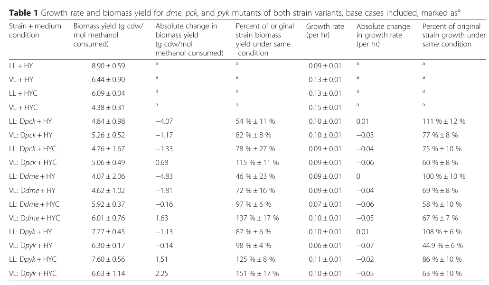

pckA encodes ATP-dependent phosphoenolpyruvate carboxykinase (PEPCK, EC 4.1.1.49), a Mn2+-requiring enzyme that catalyzes the conversion of oxaloacetate (OAA) to phosphoenolpyruvate (PEP) with concomitant decarboxylation and ATP hydrolysis. This enzyme is a key control point in gluconeogenesis, enabling the synthesis of carbohydrates from TCA cycle intermediates. In methylotrophs, pckA plays a critical role in connecting the serine cycle to biosynthetic pathways: carbon from the serine cycle flows through glycolysis to pyruvate and the TCA cycle, and pckA enables the reverse flow from oxaloacetate back to PEP for biosynthesis of sugars and other metabolites. The enzyme functions in the cytoplasm and binds one Mn2+ ion per subunit, which is essential for catalysis. Unlike the GTP-dependent PEPCK found in many eukaryotes, bacterial pckA uses ATP as the phosphate donor. This enzymatic activity represents a crucial anaplerotic/cataplerotic node that allows the organism to balance carbon flow between energy production (glycolysis/TCA) and biosynthesis (gluconeogenesis) during methylotrophic growth. PckA is essential for growth on C1 compounds as it enables the regeneration of biosynthetic precursors from central metabolism.
| GO Term | Evidence | Action | Reason |
|---|---|---|---|
|
GO:0000166
nucleotide binding
|
IEA
GO_REF:0000043 |
KEEP AS NON CORE |
Summary: This is a very general parent term that is correct but not informative. The more specific terms GO:0005524 (ATP binding) and GO:0017076 (purine nucleotide binding) provide better functional annotation.
|
|
GO:0004611
phosphoenolpyruvate carboxykinase activity
|
IEA
GO_REF:0000002 |
KEEP AS NON CORE |
Summary: This is a general term for PEPCK activity. However, the more specific term GO:0004612 (phosphoenolpyruvate carboxykinase (ATP) activity) properly distinguishes the ATP-dependent bacterial enzyme from the GTP-dependent eukaryotic form.
|
|
GO:0004612
phosphoenolpyruvate carboxykinase (ATP) activity
|
IEA
GO_REF:0000120 |
ACCEPT |
Summary: This is the primary and specific catalytic activity of bacterial PckA - the ATP-dependent decarboxylation/phosphorylation of oxaloacetate to phosphoenolpyruvate. UniProt assigns EC 4.1.1.49 (the ATP-dependent enzyme), distinguishing it from the GTP-dependent eukaryotic form (EC 4.1.1.32). The falcon deep-research review confirms this reaction chemistry and its central role in M. extorquens AM1 carbon metabolism, including in vivo fluxomic and Δpck genetic evidence.
Supporting Evidence:
file:METEA/pckA/pckA-uniprot.txt
oxaloacetate + ATP = phosphoenolpyruvate + ADP + CO2
file:METEA/pckA/pckA-deep-research-falcon.md
ATP-dependent PEPCK catalyzes the reversible interconversion between oxaloacetate (OAA) and phosphoenolpyruvate (PEP)
|
|
GO:0005524
ATP binding
|
IEA
GO_REF:0000120 |
ACCEPT |
Summary: PckA uses ATP as the phosphate donor for converting oxaloacetate to PEP; UniProt annotates multiple ATP-binding-site residues. ATP binding is essential for the enzymatic activity. The falcon review notes the mechanism proceeds via OAA decarboxylation to a stabilized enolate followed by phosphoryl transfer from the nucleotide.
Supporting Evidence:
file:METEA/pckA/pckA-uniprot.txt
oxaloacetate + ATP = phosphoenolpyruvate + ADP + CO2
file:METEA/pckA/pckA-deep-research-falcon.md
catalysis proceeds stepwise via OAA decarboxylation to a stabilized enolate intermediate, enabling phosphoryl transfer from the nucleotide
|
|
GO:0005737
cytoplasm
|
IEA
GO_REF:0000120 |
KEEP AS NON CORE |
Summary: This is a general parent term of cytosol. While correct, the more specific term GO:0005829 (cytosol) provides better localization information.
|
|
GO:0005829
cytosol
|
IEA
GO_REF:0000118 |
ACCEPT |
Summary: PckA is a soluble central-carbon metabolic enzyme localized to the cytosol, where it functions at the PEP-pyruvate-OAA node. UniProt annotates the cytoplasm; the falcon review notes no AM1-specific localization experiment exists but treats PEPCK as a cytosolic central-metabolism enzyme as a general principle, consistent with this annotation.
Supporting Evidence:
file:METEA/pckA/pckA-uniprot.txt
Cytoplasm
|
|
GO:0006094
gluconeogenesis
|
IEA
GO_REF:0000120 |
ACCEPT |
Summary: PckA catalyzes the gluconeogenic (OAA -> PEP) step, converting the TCA-cycle/anaplerotic intermediate oxaloacetate to PEP for biosynthesis. In M. extorquens AM1 this is a C4->C3 interconversion at the PEP-pyruvate-OAA node, linking the serine cycle, ethylmalonyl-CoA pathway, and TCA cycle. Genome-scale reconstruction and 13C-fluxomics show net PEPCK flux (OAA->PEP) during methylotrophic growth, and Δpck mutants have reduced biomass yield - supporting the gluconeogenesis/biosynthetic-precursor role.
Supporting Evidence:
file:METEA/pckA/pckA-uniprot.txt
Carbohydrate biosynthesis; gluconeogenesis
file:METEA/pckA/pckA-deep-research-falcon.md
at branching points connecting the serine cycle, the ethylmalonyl-CoA pathway (EMCP), the TCA cycle, and anaplerotic processes
file:METEA/pckA/pckA-deep-research-falcon.md
supports a model in which AM1 uses PEPCK substantially as an **OAA → PEP (C4→C3)** route under at least some methylotrophic conditions.
|
|
GO:0016829
lyase activity
|
IEA
GO_REF:0000043 |
KEEP AS NON CORE |
Summary: This is a general parent term for enzymes that catalyze cleavage reactions. While technically correct (PckA is a carboxy-lyase), the more specific term GO:0016831 provides better annotation.
|
|
GO:0016831
carboxy-lyase activity
|
IEA
GO_REF:0000043 |
ACCEPT |
Summary: This accurately describes the enzymatic mechanism - PckA catalyzes the decarboxylation (carboxy-lyase activity) of oxaloacetate with concomitant phosphorylation to form PEP, releasing CO2 as a product. The falcon review describes the stepwise mechanism (OAA decarboxylation to a stabilized enolate intermediate before phosphoryl transfer), supporting the carboxy-lyase characterization.
Supporting Evidence:
file:METEA/pckA/pckA-uniprot.txt
oxaloacetate + ATP = phosphoenolpyruvate + ADP + CO2
file:METEA/pckA/pckA-deep-research-falcon.md
catalysis proceeds stepwise via OAA decarboxylation to a stabilized enolate intermediate, enabling phosphoryl transfer from the nucleotide
|
|
GO:0017076
purine nucleotide binding
|
IEA
GO_REF:0000002 |
ACCEPT |
Summary: PckA binds ATP (a purine nucleotide) as a substrate for the phosphorylation reaction. This is a valid supporting molecular function, though GO:0005524 (ATP binding) is more specific.
|
|
GO:0046872
metal ion binding
|
IEA
GO_REF:0000043 |
ACCEPT |
Summary: This is a general parent term. PckA specifically requires Mn2+ for catalysis (binds 1 Mn2+ ion per subunit). A more specific manganese ion binding term would be more informative, but this general term is correct. [file:METEA/pckA/pckA-uniprot.txt, "Binds 1 Mn(2+) ion per subunit"]
|
The research report should be a detailed narrative explaining the function, biological processes, and localization of the gene product. Citations should be given for all claims.
You should prioritize authoritative reviews and primary scientific literature when conducting research. You can supplement
this with annotations you find in gene/protein databases, but these can be outdated or inaccurate.
We are specifically interested in the primary function of the gene - for enzymes, what reaction is catalyzed, and what is the substrate specificity? For transporters, what is the substrate? For structural proteins or adapters, what is the broader structural role? For signaling molecules, what is the role in the pathway.
We are interested in where in or outside the cell the gene product carries out its function.
We are also interested in the signaling or biochemical pathways in which the gene functions. We are less interested in broad pleiotropic effects, except where these elucidate the precise role.
Include evidence where possible. We are interested in both experimental evidence as well as inference from structure, evolution, or bioinformatic analysis. Precise studies should be prioritized over high-throughput, where available.
This report is restricted to the ATP-dependent phosphoenolpyruvate carboxykinase (PEPCK/PCK; EC 4.1.1.49) encoded by pck / pckA in Methylorubrum extorquens strain AM1 (formerly Methylobacterium extorquens AM1), matching the user-provided UniProt record (C5B045) and the enzyme family discussed in bacterial central-carbon metabolism literature (ATP-dependent PEPCK). (koendjbiharie2021thepeppyruvateoxaloacetatenode pages 6-7, koendjbiharie2021thepeppyruvateoxaloacetatenode pages 7-8)
ATP-dependent PEPCK catalyzes the reversible interconversion between oxaloacetate (OAA) and phosphoenolpyruvate (PEP):
OAA + ATP ⇌ PEP + ADP + CO2 (koendjbiharie2021thepeppyruvateoxaloacetatenode pages 6-7)
Thermodynamic values compiled for the ATP-dependent reaction suggest it can operate close to equilibrium, consistent with bidirectionality depending on cellular demands (ΔrG′m ≈ −6.8 ± 6.2 kJ/mol for the ATP-dependent form). (koendjbiharie2021thepeppyruvateoxaloacetatenode pages 6-7, koendjbiharie2021thepeppyruvateoxaloacetatenode pages 7-8)
Mechanistically, PEPCK binds CO2 (not bicarbonate) at a specific CO2 binding site, distinguishing it from PEP carboxylase (PEPC) which uses HCO3−. (koendjbiharie2021thepeppyruvateoxaloacetatenode pages 6-7)
ATP-dependent PEPCK requires divalent metal ions for maximal activity: Mg2+ typically complexes the nucleotide substrate, and Mn2+ associates with the active site; catalysis proceeds stepwise via OAA decarboxylation to a stabilized enolate intermediate, enabling phosphoryl transfer from the nucleotide. (koendjbiharie2021thepeppyruvateoxaloacetatenode pages 6-7)
A complementary mechanistic synthesis notes that ATP-dependent PEPCK catalysis involves two metals (one nucleotide-associated and a second transition-metal cofactor such as Mn2+/Co2+/Ca2+ that helps stabilize the enolate), with an SN2-type phosphoryl transfer step. (rojas2023integratingmultipleregulations pages 1-2)
PEPCK is one of the enzyme types at the PEP–pyruvate–OAA node, a central junction connecting glycolysis/gluconeogenesis, the TCA cycle, and multiple anaplerotic routes. Variation in which PPO-node enzymes are present/used across organisms is a key determinant of energetic and ecological strategy. (koendjbiharie2021thepeppyruvateoxaloacetatenode pages 1-2)
Genome-scale reconstruction for M. extorquens AM1 places PEPCK among enzymes supporting C3/C4 interconversions, at branching points connecting the serine cycle, the ethylmalonyl-CoA pathway (EMCP), the TCA cycle, and anaplerotic processes. (peyraud2011genomescalereconstructionand pages 4-5)
In a system-level analysis integrating reconstruction with experimental fluxomics, AM1 showed net PEPCK flux during methylotrophic growth, with PEPCK and malic enzyme contributing to measured CO2 release in central metabolism and participating in PEP/OAA cycling (substrate cycling among C3/C4 interconversions). (peyraud2011genomescalereconstructionand pages 13-14)
Key quantitative values reported include:
- PEPCK flux: 0.26 mmol·g−1·h−1 (methylotrophic growth) (peyraud2011genomescalereconstructionand pages 13-14)
- Malic enzyme flux: 0.36 mmol·g−1·h−1 (peyraud2011genomescalereconstructionand pages 13-14)
- PEP/OAA cycling contribution: ~13% of PEP recycled (peyraud2011genomescalereconstructionand pages 13-14)
This evidence supports a model in which AM1 uses PEPCK substantially as an OAA → PEP (C4→C3) route under at least some methylotrophic conditions. (peyraud2011genomescalereconstructionand pages 13-14, peyraud2011genomescalereconstructionand pages 4-5)
A separate methanol-limited chemostat 13C-labeling study reported essentially zero exchange through the combined “PEP carboxylase/carboxykinase” step under their tested regime (dilution rate 0.09 h−1, ~80% µmax), emphasizing that flux through this node can be highly condition-dependent. (dien2003quantificationofcentral pages 8-9)
A focused 13C metabolic flux analysis study comparing two AM1 variants (LL and VL) found that PEPCK activity is strain- and cobalt-condition-dependent (active in LL under low cobalt; negligible in VL and in LL under high cobalt), consistent with flexible routing at the C3–C4 node. (fu2016differenceinc3–c4 pages 5-6)
Crucially, Δpck reduced biomass yield, especially in the LL strain under low cobalt (HY), with modest effects on growth rate:
These mutant data support the conclusion that PEPCK contributes disproportionately to a high-yield C3/C4 interconversion strategy rather than directly determining maximal growth rate. (fu2016differenceinc3–c4 pages 5-6, fu2016differenceinc3–c4 media ec0d3f91)
Visual evidence: the above mutant yield values are shown in Fu et al. 2016 Table 1. (fu2016differenceinc3–c4 media ec0d3f91)
The same study notes that PEPCK consumes ATP, whereas alternative routes involving pyruvate kinase (PK) and pyruvate dehydrogenase (PYRDH) produce ATP/NADH, helping explain why shifting usage among these reactions can drive a growth-rate vs. yield tradeoff. (fu2016differenceinc3–c4 pages 5-6)
A major review of the PPO node reports that ATP-dependent PEPCKs have documented allosteric regulation in some bacteria (e.g., Ca2+ activation in E. coli), while GTP-dependent PEPCKs have not shown reported allosteric control in that review’s summary. (koendjbiharie2021thepeppyruvateoxaloacetatenode pages 7-8)
Within the evidence retrieved here, direct AM1-specific transcriptional regulators or post-translational modifications for PEPCK were not identified. Thus, AM1 pckA regulation should currently be treated as an open/insufficiently evidenced point based on this evidence set, despite strong pathway-level and phenotype-level support for its functional importance. (koendjbiharie2021thepeppyruvateoxaloacetatenode pages 7-8, fu2016differenceinc3–c4 pages 5-6)
The retrieved sources establish PEPCK as a central-carbon metabolic enzyme operating at the cytosolic PPO node in bacteria as a general principle, but they do not provide direct AM1-specific localization experiments in the included excerpts. Therefore, this report does not assert a subcellular localization beyond its role in soluble central metabolism at the PEP–pyruvate–OAA node. (koendjbiharie2021thepeppyruvateoxaloacetatenode pages 1-2)
A 2024 study engineered M. extorquens (TK 0001) for methylotrophic glycolic acid production using constraint-based modeling and experimental strain construction. Glyoxylate (a serine-cycle intermediate) was identified as the key precursor, linked to regeneration via the EMCP and CO2/bicarbonate fixation. (dietz2024anovelengineered pages 10-12)
Quantitative highlights include:
- Elementary flux modes (EFMs) computed: 312,373 GA-forming EFMs (267,347 analyzed post-filtering) (dietz2024anovelengineered pages 8-10)
- Max theoretical GA yield: 0.5 mol GA/mol MeOH (also reported as 1.19 g/g) (dietz2024anovelengineered pages 8-10)
- Growth-coupled near-max yield: ~0.487 mol GA/mol MeOH (dietz2024anovelengineered pages 10-12, dietz2024anovelengineered pages 8-10)
- Fed-batch titer (mixture): up to 1.2 g/L total glycolic + lactic acid (dietz2024anovelengineered pages 1-2)
Importantly for pckA annotation, the authors explicitly discuss phosphoenolpyruvate carboxykinase (PCK) as a candidate to couple oxaloacetate supply with additional ATP generation (in contrast to relying solely on PEPC-centered solutions), reinforcing that the OAA→PEP link is viewed as a practical intervention point in methylotrophic central metabolism. (dietz2024anovelengineered pages 10-12)
A 2023 review on central carbon metabolism (CCM) optimization provides expert synthesis emphasizing that controlling PEP availability and node-level regulation can substantially improve production traits. (wu2023advancesinthe pages 7-8)
Quantitative examples in that review include:
- A M. extorquens example using QscR-based sensor-assisted transcriptional regulation reported to increase acetyl-CoA ~7% and enable mevalonate production to 2.67 g/L (wu2023advancesinthe pages 7-8)
- An example in Geobacillus thermoglucosidasius where knockout of a regulator affecting glyceraldehyde-3-phosphate dehydrogenase and phosphoenolpyruvate carboxykinase increased riboflavin production 1.51-fold (171.6 → 260.3 mg/L) (wu2023advancesinthe pages 7-8)
While not AM1 pckA-specific, these examples provide authoritative context for why PPO-node enzymes (including PEPCK) are frequently targeted in metabolic engineering strategies. (wu2023advancesinthe pages 7-8)
A 2024 pangenomic study of 75 type II methylotrophs identified 256 exact core gene families and reported broad distribution of related anaplerotic enzymes (e.g., PEPC present across the dataset in the extracted excerpt), providing context that PPO-node configurations are broadly conserved but may vary at the isoform/accessory gene level. The excerpt did not explicitly report pckA/PEPCK frequency, so no pckA presence/absence statistic can be extracted from the provided text. (samanta2024fromgenometo pages 20-22, samanta2024fromgenometo pages 14-16)
Primary molecular function: ATP-dependent phosphoenolpyruvate carboxykinase (EC 4.1.1.49) catalyzing OAA + ATP ⇌ PEP + ADP + CO2, requiring divalent metals (Mg2+/Mn2+) and operating near equilibrium in vitro with direction determined by network/energetic demands. (koendjbiharie2021thepeppyruvateoxaloacetatenode pages 6-7, rojas2023integratingmultipleregulations pages 1-2)
Physiological role in AM1: component of the C3/C4 interconversion network at the PPO node, functionally linked to the serine cycle/EMCP/TCA integration; experimental fluxomics and genetics indicate PEPCK frequently contributes to OAA→PEP routing and supports high biomass yield states, with condition- and strain-dependent utilization. (peyraud2011genomescalereconstructionand pages 13-14, fu2016differenceinc3–c4 pages 5-6, fu2016differenceinc3–c4 media ec0d3f91)
Best-supported organism-specific quantitative evidence: methylotrophic flux through PEPCK (0.26 mmol·g−1·h−1) and Δpck biomass yield decreases (e.g., LL HY: 8.90→4.84 g/mol). (peyraud2011genomescalereconstructionand pages 13-14, fu2016differenceinc3–c4 media ec0d3f91)
Regulation/localization: direct AM1-specific regulators or localization experiments were not found in the retrieved excerpts; bacterial ATP-PEPCKs can be allosterically regulated in some organisms (e.g., Ca2+ in E. coli), but extrapolation to AM1 should be considered tentative without direct evidence. (koendjbiharie2021thepeppyruvateoxaloacetatenode pages 7-8)
| Evidence type | Key finding about pckA/PEPCK | Quantitative values | Experimental/analysis context | Source and URL | Notes/implications for in vivo direction/pathway |
|---|---|---|---|---|---|
| Biochemistry/mechanism | ATP-dependent PEPCK catalyzes reversible OAA + ATP ↔ PEP + ADP + CO2; requires Mg2+ and Mn2+ and proceeds via decarboxylation to an enolate intermediate before phosphoryl transfer. ATP-dependent forms are common in bacteria. (rojas2023integratingmultipleregulations pages 1-2, koendjbiharie2021thepeppyruvateoxaloacetatenode pages 6-7, koendjbiharie2021thepeppyruvateoxaloacetatenode pages 7-8) | ΔrG′m ≈ -6.8 ± 6.2 kJ/mol for ATP-dependent reaction; metal requirement includes Mg2+ with nucleotide and Mn2+ at active site. (koendjbiharie2021thepeppyruvateoxaloacetatenode pages 6-7) | General enzyme biochemistry at the PEP-pyruvate-OAA node; not AM1-specific. | Rojas 2023 AoB Plants; Koendjbiharie 2021 FEMS Microbiol Rev. https://doi.org/10.1093/aobpla/plad053 ; https://doi.org/10.1093/femsre/fuaa061 | Supports annotation of UniProt C5B045 as ATP-dependent PEPCK acting at the central C3/C4 branchpoint; reaction can run either way depending on network demands. |
| Fluxomics | In Methylorubrum/Methylobacterium extorquens AM1 during methylotrophic growth, PEPCK is part of the dense C3/C4 interconversion subnetwork and functions as a C4→C3 step linked to PEP/OAA cycling and central CO2 release. (peyraud2011genomescalereconstructionand pages 13-14, peyraud2011genomescalereconstructionand pages 4-5) | PEPCK flux 0.26 mmol·g^-1·h^-1; malic enzyme 0.36 mmol·g^-1·h^-1; PEP/OAA cycling accounted for ~13% of recycled PEP; Me-THF assimilation flux 2.4 ± 0.02 mmol·g^-1·h^-1. (peyraud2011genomescalereconstructionand pages 13-14) | AM1, methylotrophic growth; genome-scale reconstruction integrated with 13C-fluxomics. | Peyraud 2011 BMC Syst Biol. https://doi.org/10.1186/1752-0509-5-189 | Experimental evidence favors substantial in vivo OAA→PEP operation under methanol growth, contributing to substrate cycling/anaplerotic flexibility rather than being a dedicated sole gluconeogenic route. |
| Fluxomics | Earlier chemostat 13C-labeling work detected essentially no significant exchange through the combined PEPC/PEPCK step under the tested steady-state condition, indicating strong condition dependence of this node. (dien2003quantificationofcentral pages 8-9) | Exchange coefficient for combined PEPC/PEPCK: 0 (0.19) in WT and 0 (0.16) in phaR mutant; dilution rate 0.09 h^-1 (~80% of µmax). (dien2003quantificationofcentral pages 8-9) | AM1 methanol-limited chemostats; WT and phaR mutant. | Van Dien 2003 Biotechnol Bioeng. https://doi.org/10.1002/bit.10745 | Suggests pckA usage is context-sensitive; lack of exchange in one chemostat regime does not contradict active net OAA→PEP flux in other methylotrophic conditions. |
| Genetics/phenotype | 13C-MFA and knockout analysis show pck contributes more to biomass-yield-optimized metabolism than to maximal growth rate; PEPCK is active in LL under low cobalt but negligible in VL and in LL under high cobalt. (fu2016differenceinc3–c4 pages 5-6, fu2016differenceinc3–c4 pages 1-2) | LL + HY biomass yield 8.90 ± 0.59 g/mol; Δpck LL + HY 4.84 ± 0.98 g/mol (−4.07 g/mol; 54% of WT). VL + HY biomass yield 6.45 ± 0.49 g/mol; Δpck VL + HY 5.26 ± 0.52 g/mol (82% of WT). LL growth rate remained ~0.09–0.10 h^-1 with Δpck showing only small effect. (fu2016differenceinc3–c4 pages 5-6, fu2016differenceinc3–c4 media ec0d3f91) | AM1 LL and VL variants; HY vs HYC cobalt conditions; targeted Δpck mutant with 13C-MFA. | Fu 2016 BMC Microbiol. https://doi.org/10.1186/s12866-016-0778-4 | Strongest AM1-specific genetic evidence: pckA supports high biomass yield, especially in LL/low-cobalt conditions, consistent with OAA→PEP flux feeding efficient assimilatory C3/C4 balancing. |
| Genetics/phenotype | PEPCK consumes ATP, whereas alternative PK/PYRDH routes produce ATP/NADH; this energetic contrast helps explain why pck loss mainly lowers yield-associated metabolism rather than abolishing growth. (fu2016differenceinc3–c4 pages 5-6, fu2017metabolicfluxanalysisa pages 25-29, fu2016differenceinc3–c4 pages 6-8) | Qualitative energetic comparison: PEPCK consumes 1 ATP. (fu2017metabolicfluxanalysisa pages 25-29, fu2016differenceinc3–c4 pages 6-8) | AM1 strain-comparison and mutant study under methanol growth with different cobalt levels. | Fu 2016 BMC Microbiol. https://doi.org/10.1186/s12866-016-0778-4 | Implies pckA participates in a higher-yield, more assimilatory C3/C4 strategy, while faster-growth states rely more on PK/PYRDH and less on PEPCK. |
| Modeling/engineering | Recent methanol-to-glycolate engineering/modeling in Methylorubrum extorquens identifies PCK as a candidate enzyme to strengthen the OAA→PEP link and potentially generate extra ATP instead of relying solely on PPC-centered solutions. (dietz2024anovelengineered pages 10-12, dietz2024anovelengineered pages 8-10) | 312,373 GA-forming EFMs computed; 267,347 analyzed; maximal theoretical GA yield 0.5 mol/mol methanol (1.19 g/g), growth-coupled near-maximal yield ~0.487 mol/mol; some EFMs co-produced up to 0.188–0.250 mol ATP/mol methanol; best fed-batch strain reached total 1.2 g/L glycolic + lactic acid. (dietz2024anovelengineered pages 8-10, dietz2024anovelengineered pages 1-2) | Engineered Methylorubrum extorquens TK 0001 for glycolic acid production; constraint-based modeling plus strain engineering. | Dietz 2024 Microb Cell Fact. https://doi.org/10.1186/s12934-024-02583-y | Although not direct AM1 pckA functional genetics, this recent work reinforces that the PEP/OAA node—and potentially PCK activity—is a practical engineering handle in methylotrophic central metabolism. |
| Comparative genomics/regulation | In type II methylotrophs, PEPC and other PEP-pyruvate-OAA node enzymes are broadly distributed, but the 2024 pangenome excerpt did not explicitly report pckA/PEPCK. For ATP-dependent bacterial PEPCKs more generally, specific allosteric regulation is known in some bacteria (e.g., Ca2+ activation in E. coli), but no AM1-specific regulator for pckA was identified in the gathered evidence. (koendjbiharie2021thepeppyruvateoxaloacetatenode pages 7-8, samanta2024fromgenometo pages 14-16, samanta2024fromgenometo pages 20-22) | 75 type II methylotroph genomes analyzed; 256 exact core gene families identified; PEPC present across all 75 organisms, but no explicit pckA statistic reported in the extracted text. (samanta2024fromgenometo pages 14-16, samanta2024fromgenometo pages 20-22) | Comparative genomics across type II methylotrophs; broader ATP-PEPCK regulation review. | Samanta 2024 mSystems; Koendjbiharie 2021 FEMS Microbiol Rev. https://doi.org/10.1128/msystems.00248-24 ; https://doi.org/10.1093/femsre/fuaa061 | For AM1 annotation, regulation remains a gap: the protein is confidently assigned by sequence/family, but direct transcriptional/allosteric control in AM1 is not established by the retrieved evidence. |
Table: This table summarizes experimentally supported and recent modeling evidence for Methylorubrum extorquens AM1 pck/pckA, emphasizing reaction chemistry, in vivo pathway role, mutant phenotypes, and biotechnology relevance. It is designed as a compact annotation aid linking each major claim to specific cited evidence.
Fu et al. 2016 Table 1 (growth rate and biomass yield changes for Δpck and other mutants): (fu2016differenceinc3–c4 media ec0d3f91)
References
(koendjbiharie2021thepeppyruvateoxaloacetatenode pages 6-7): Jeroen G Koendjbiharie, Richard van Kranenburg, and Servé W M Kengen. The pep-pyruvate-oxaloacetate node: variation at the heart of metabolism. FEMS Microbiology Reviews, Dec 2021. URL: https://doi.org/10.1093/femsre/fuaa061, doi:10.1093/femsre/fuaa061. This article has 79 citations and is from a domain leading peer-reviewed journal.
(koendjbiharie2021thepeppyruvateoxaloacetatenode pages 7-8): Jeroen G Koendjbiharie, Richard van Kranenburg, and Servé W M Kengen. The pep-pyruvate-oxaloacetate node: variation at the heart of metabolism. FEMS Microbiology Reviews, Dec 2021. URL: https://doi.org/10.1093/femsre/fuaa061, doi:10.1093/femsre/fuaa061. This article has 79 citations and is from a domain leading peer-reviewed journal.
(rojas2023integratingmultipleregulations pages 1-2): Bruno E Rojas and Alberto A Iglesias. Integrating multiple regulations on enzyme activity: the case of phosphoenolpyruvate carboxykinases. AoB Plants, Jul 2023. URL: https://doi.org/10.1093/aobpla/plad053, doi:10.1093/aobpla/plad053. This article has 5 citations and is from a peer-reviewed journal.
(koendjbiharie2021thepeppyruvateoxaloacetatenode pages 1-2): Jeroen G Koendjbiharie, Richard van Kranenburg, and Servé W M Kengen. The pep-pyruvate-oxaloacetate node: variation at the heart of metabolism. FEMS Microbiology Reviews, Dec 2021. URL: https://doi.org/10.1093/femsre/fuaa061, doi:10.1093/femsre/fuaa061. This article has 79 citations and is from a domain leading peer-reviewed journal.
(peyraud2011genomescalereconstructionand pages 4-5): Rémi Peyraud, Kathrin Schneider, Patrick Kiefer, Stéphane Massou, Julia A Vorholt, and Jean-Charles Portais. Genome-scale reconstruction and system level investigation of the metabolic network of methylobacterium extorquens am1. BMC Systems Biology, 5:189-189, Nov 2011. URL: https://doi.org/10.1186/1752-0509-5-189, doi:10.1186/1752-0509-5-189. This article has 165 citations and is from a peer-reviewed journal.
(peyraud2011genomescalereconstructionand pages 13-14): Rémi Peyraud, Kathrin Schneider, Patrick Kiefer, Stéphane Massou, Julia A Vorholt, and Jean-Charles Portais. Genome-scale reconstruction and system level investigation of the metabolic network of methylobacterium extorquens am1. BMC Systems Biology, 5:189-189, Nov 2011. URL: https://doi.org/10.1186/1752-0509-5-189, doi:10.1186/1752-0509-5-189. This article has 165 citations and is from a peer-reviewed journal.
(dien2003quantificationofcentral pages 8-9): Stephen J. Van Dien, Tim Strovas, and Mary E. Lidstrom. Quantification of central metabolic fluxes in the facultative methylotroph methylobacterium extorquens am1 using 13c‐label tracing and mass spectrometry. Biotechnology and Bioengineering, 84:45-55, Oct 2003. URL: https://doi.org/10.1002/bit.10745, doi:10.1002/bit.10745. This article has 64 citations and is from a domain leading peer-reviewed journal.
(fu2016differenceinc3–c4 pages 5-6): Yanfen Fu, David A. C. Beck, and Mary E. Lidstrom. Difference in c3–c4 metabolism underlies tradeoff between growth rate and biomass yield in methylobacterium extorquens am1. BMC Microbiology, Jul 2016. URL: https://doi.org/10.1186/s12866-016-0778-4, doi:10.1186/s12866-016-0778-4. This article has 14 citations and is from a peer-reviewed journal.
(fu2016differenceinc3–c4 media ec0d3f91): Yanfen Fu, David A. C. Beck, and Mary E. Lidstrom. Difference in c3–c4 metabolism underlies tradeoff between growth rate and biomass yield in methylobacterium extorquens am1. BMC Microbiology, Jul 2016. URL: https://doi.org/10.1186/s12866-016-0778-4, doi:10.1186/s12866-016-0778-4. This article has 14 citations and is from a peer-reviewed journal.
(dietz2024anovelengineered pages 10-12): Katharina Dietz, Carina Sagstetter, Melanie Speck, Arne Roth, Steffen Klamt, and Jonathan Thomas Fabarius. A novel engineered strain of methylorubrum extorquens for methylotrophic production of glycolic acid. Microbial Cell Factories, Dec 2024. URL: https://doi.org/10.1186/s12934-024-02583-y, doi:10.1186/s12934-024-02583-y. This article has 10 citations and is from a peer-reviewed journal.
(dietz2024anovelengineered pages 8-10): Katharina Dietz, Carina Sagstetter, Melanie Speck, Arne Roth, Steffen Klamt, and Jonathan Thomas Fabarius. A novel engineered strain of methylorubrum extorquens for methylotrophic production of glycolic acid. Microbial Cell Factories, Dec 2024. URL: https://doi.org/10.1186/s12934-024-02583-y, doi:10.1186/s12934-024-02583-y. This article has 10 citations and is from a peer-reviewed journal.
(dietz2024anovelengineered pages 1-2): Katharina Dietz, Carina Sagstetter, Melanie Speck, Arne Roth, Steffen Klamt, and Jonathan Thomas Fabarius. A novel engineered strain of methylorubrum extorquens for methylotrophic production of glycolic acid. Microbial Cell Factories, Dec 2024. URL: https://doi.org/10.1186/s12934-024-02583-y, doi:10.1186/s12934-024-02583-y. This article has 10 citations and is from a peer-reviewed journal.
(wu2023advancesinthe pages 7-8): Zhenke Wu, Xiqin Liang, Mingkai Li, Mengyu Ma, Qiusheng Zheng, Defang Li, Tianyue An, and Guoli Wang. Advances in the optimization of central carbon metabolism in metabolic engineering. Microbial Cell Factories, Apr 2023. URL: https://doi.org/10.1186/s12934-023-02090-6, doi:10.1186/s12934-023-02090-6. This article has 93 citations and is from a peer-reviewed journal.
(samanta2024fromgenometo pages 20-22): Dipayan Samanta, Shailabh Rauniyar, Priya Saxena, and Rajesh K. Sani. From genome to evolution: investigating type ii methylotrophs using a pangenomic analysis. Jun 2024. URL: https://doi.org/10.1128/msystems.00248-24, doi:10.1128/msystems.00248-24. This article has 9 citations and is from a peer-reviewed journal.
(samanta2024fromgenometo pages 14-16): Dipayan Samanta, Shailabh Rauniyar, Priya Saxena, and Rajesh K. Sani. From genome to evolution: investigating type ii methylotrophs using a pangenomic analysis. Jun 2024. URL: https://doi.org/10.1128/msystems.00248-24, doi:10.1128/msystems.00248-24. This article has 9 citations and is from a peer-reviewed journal.
(fu2016differenceinc3–c4 pages 1-2): Yanfen Fu, David A. C. Beck, and Mary E. Lidstrom. Difference in c3–c4 metabolism underlies tradeoff between growth rate and biomass yield in methylobacterium extorquens am1. BMC Microbiology, Jul 2016. URL: https://doi.org/10.1186/s12866-016-0778-4, doi:10.1186/s12866-016-0778-4. This article has 14 citations and is from a peer-reviewed journal.
(fu2017metabolicfluxanalysisa pages 25-29): Y Fu. Metabolic flux analysis and metabolomics of methylotrophs. Unknown journal, 2017.
(fu2016differenceinc3–c4 pages 6-8): Yanfen Fu, David A. C. Beck, and Mary E. Lidstrom. Difference in c3–c4 metabolism underlies tradeoff between growth rate and biomass yield in methylobacterium extorquens am1. BMC Microbiology, Jul 2016. URL: https://doi.org/10.1186/s12866-016-0778-4, doi:10.1186/s12866-016-0778-4. This article has 14 citations and is from a peer-reviewed journal.

id: C5B045
gene_symbol: pckA
product_type: PROTEIN
taxon:
id: NCBITaxon:272630
label: Methylorubrum extorquens AM1
description: 'pckA encodes ATP-dependent phosphoenolpyruvate carboxykinase (PEPCK,
EC 4.1.1.49), a Mn2+-requiring enzyme that catalyzes the conversion of oxaloacetate
(OAA) to phosphoenolpyruvate (PEP) with concomitant decarboxylation and ATP hydrolysis.
This enzyme is a key control point in gluconeogenesis, enabling the synthesis of
carbohydrates from TCA cycle intermediates. In methylotrophs, pckA plays a critical
role in connecting the serine cycle to biosynthetic pathways: carbon from the serine
cycle flows through glycolysis to pyruvate and the TCA cycle, and pckA enables the
reverse flow from oxaloacetate back to PEP for biosynthesis of sugars and other
metabolites. The enzyme functions in the cytoplasm and binds one Mn2+ ion per subunit,
which is essential for catalysis. Unlike the GTP-dependent PEPCK found in many eukaryotes,
bacterial pckA uses ATP as the phosphate donor. This enzymatic activity represents
a crucial anaplerotic/cataplerotic node that allows the organism to balance carbon
flow between energy production (glycolysis/TCA) and biosynthesis (gluconeogenesis)
during methylotrophic growth. PckA is essential for growth on C1 compounds as it
enables the regeneration of biosynthetic precursors from central metabolism.'
existing_annotations:
- term:
id: GO:0000166
label: nucleotide binding
evidence_type: IEA
original_reference_id: GO_REF:0000043
review:
summary: This is a very general parent term that is correct but not informative.
The more specific terms GO:0005524 (ATP binding) and GO:0017076 (purine nucleotide
binding) provide better functional annotation.
action: KEEP_AS_NON_CORE
- term:
id: GO:0004611
label: phosphoenolpyruvate carboxykinase activity
evidence_type: IEA
original_reference_id: GO_REF:0000002
review:
summary: This is a general term for PEPCK activity. However, the more specific
term GO:0004612 (phosphoenolpyruvate carboxykinase (ATP) activity) properly
distinguishes the ATP-dependent bacterial enzyme from the GTP-dependent eukaryotic
form.
action: KEEP_AS_NON_CORE
- term:
id: GO:0004612
label: phosphoenolpyruvate carboxykinase (ATP) activity
evidence_type: IEA
original_reference_id: GO_REF:0000120
review:
summary: This is the primary and specific catalytic activity of bacterial PckA
- the ATP-dependent decarboxylation/phosphorylation of oxaloacetate to phosphoenolpyruvate.
UniProt assigns EC 4.1.1.49 (the ATP-dependent enzyme), distinguishing it from
the GTP-dependent eukaryotic form (EC 4.1.1.32). The falcon deep-research review
confirms this reaction chemistry and its central role in M. extorquens AM1 carbon
metabolism, including in vivo fluxomic and Δpck genetic evidence.
action: ACCEPT
supported_by:
- reference_id: file:METEA/pckA/pckA-uniprot.txt
supporting_text: oxaloacetate + ATP = phosphoenolpyruvate + ADP + CO2
reference_section_type: OTHER
- reference_id: file:METEA/pckA/pckA-deep-research-falcon.md
supporting_text: ATP-dependent PEPCK catalyzes the reversible interconversion
between oxaloacetate (OAA) and phosphoenolpyruvate (PEP)
reference_section_type: OTHER
- term:
id: GO:0005524
label: ATP binding
evidence_type: IEA
original_reference_id: GO_REF:0000120
review:
summary: PckA uses ATP as the phosphate donor for converting oxaloacetate to PEP;
UniProt annotates multiple ATP-binding-site residues. ATP binding is essential
for the enzymatic activity. The falcon review notes the mechanism proceeds via
OAA decarboxylation to a stabilized enolate followed by phosphoryl transfer from
the nucleotide.
action: ACCEPT
supported_by:
- reference_id: file:METEA/pckA/pckA-uniprot.txt
supporting_text: oxaloacetate + ATP = phosphoenolpyruvate + ADP + CO2
reference_section_type: OTHER
- reference_id: file:METEA/pckA/pckA-deep-research-falcon.md
supporting_text: catalysis proceeds stepwise via OAA decarboxylation to a stabilized
enolate intermediate, enabling phosphoryl transfer from the nucleotide
reference_section_type: OTHER
- term:
id: GO:0005737
label: cytoplasm
evidence_type: IEA
original_reference_id: GO_REF:0000120
review:
summary: This is a general parent term of cytosol. While correct, the more specific
term GO:0005829 (cytosol) provides better localization information.
action: KEEP_AS_NON_CORE
- term:
id: GO:0005829
label: cytosol
evidence_type: IEA
original_reference_id: GO_REF:0000118
review:
summary: PckA is a soluble central-carbon metabolic enzyme localized to the cytosol,
where it functions at the PEP-pyruvate-OAA node. UniProt annotates the cytoplasm;
the falcon review notes no AM1-specific localization experiment exists but treats
PEPCK as a cytosolic central-metabolism enzyme as a general principle, consistent
with this annotation.
action: ACCEPT
supported_by:
- reference_id: file:METEA/pckA/pckA-uniprot.txt
supporting_text: Cytoplasm
reference_section_type: OTHER
- term:
id: GO:0006094
label: gluconeogenesis
evidence_type: IEA
original_reference_id: GO_REF:0000120
review:
summary: PckA catalyzes the gluconeogenic (OAA -> PEP) step, converting the TCA-cycle/anaplerotic
intermediate oxaloacetate to PEP for biosynthesis. In M. extorquens AM1 this is
a C4->C3 interconversion at the PEP-pyruvate-OAA node, linking the serine cycle,
ethylmalonyl-CoA pathway, and TCA cycle. Genome-scale reconstruction and 13C-fluxomics
show net PEPCK flux (OAA->PEP) during methylotrophic growth, and Δpck mutants have
reduced biomass yield - supporting the gluconeogenesis/biosynthetic-precursor role.
action: ACCEPT
supported_by:
- reference_id: file:METEA/pckA/pckA-uniprot.txt
supporting_text: Carbohydrate biosynthesis; gluconeogenesis
reference_section_type: OTHER
- reference_id: file:METEA/pckA/pckA-deep-research-falcon.md
supporting_text: at branching points connecting the serine cycle, the ethylmalonyl-CoA
pathway (EMCP), the TCA cycle, and anaplerotic processes
reference_section_type: OTHER
- reference_id: file:METEA/pckA/pckA-deep-research-falcon.md
supporting_text: supports a model in which AM1 uses PEPCK substantially as an
**OAA → PEP (C4→C3)** route under at least some methylotrophic conditions.
reference_section_type: OTHER
- term:
id: GO:0016829
label: lyase activity
evidence_type: IEA
original_reference_id: GO_REF:0000043
review:
summary: This is a general parent term for enzymes that catalyze cleavage reactions.
While technically correct (PckA is a carboxy-lyase), the more specific term
GO:0016831 provides better annotation.
action: KEEP_AS_NON_CORE
- term:
id: GO:0016831
label: carboxy-lyase activity
evidence_type: IEA
original_reference_id: GO_REF:0000043
review:
summary: This accurately describes the enzymatic mechanism - PckA catalyzes the
decarboxylation (carboxy-lyase activity) of oxaloacetate with concomitant phosphorylation
to form PEP, releasing CO2 as a product. The falcon review describes the stepwise
mechanism (OAA decarboxylation to a stabilized enolate intermediate before phosphoryl
transfer), supporting the carboxy-lyase characterization.
action: ACCEPT
supported_by:
- reference_id: file:METEA/pckA/pckA-uniprot.txt
supporting_text: oxaloacetate + ATP = phosphoenolpyruvate + ADP + CO2
reference_section_type: OTHER
- reference_id: file:METEA/pckA/pckA-deep-research-falcon.md
supporting_text: catalysis proceeds stepwise via OAA decarboxylation to a stabilized
enolate intermediate, enabling phosphoryl transfer from the nucleotide
reference_section_type: OTHER
- term:
id: GO:0017076
label: purine nucleotide binding
evidence_type: IEA
original_reference_id: GO_REF:0000002
review:
summary: PckA binds ATP (a purine nucleotide) as a substrate for the phosphorylation
reaction. This is a valid supporting molecular function, though GO:0005524 (ATP
binding) is more specific.
action: ACCEPT
- term:
id: GO:0046872
label: metal ion binding
evidence_type: IEA
original_reference_id: GO_REF:0000043
review:
summary: This is a general parent term. PckA specifically requires Mn2+ for catalysis
(binds 1 Mn2+ ion per subunit). A more specific manganese ion binding term would
be more informative, but this general term is correct. [file:METEA/pckA/pckA-uniprot.txt,
"Binds 1 Mn(2+) ion per subunit"]
action: ACCEPT
core_functions:
- description: PckA catalyzes the ATP- and Mn2+-dependent decarboxylation of oxaloacetate
to phosphoenolpyruvate (PEP), a key rate-limiting step in gluconeogenesis. This
reaction enables M. extorquens to synthesize carbohydrates and other biosynthetic
precursors from TCA cycle intermediates during methylotrophic growth. In the context
of C1 metabolism, carbon from methanol flows through the serine cycle → glycolysis
→ pyruvate → TCA cycle, and pckA enables the crucial reverse flow from oxaloacetate
back to PEP for biosynthesis. The enzyme functions in the cytosol, binds one Mn2+
ion per subunit for catalysis, and uses ATP (not GTP) as the phosphate donor,
distinguishing it from eukaryotic PEPCKs. PckA represents a critical anaplerotic/cataplerotic
control point that balances carbon flow between energy production and biosynthesis,
and is essential for growth on C1 compounds.
molecular_function:
id: GO:0004612
label: phosphoenolpyruvate carboxykinase (ATP) activity
directly_involved_in:
- id: GO:0006094
label: gluconeogenesis
locations:
- id: GO:0005829
label: cytosol
supported_by:
- reference_id: file:METEA/pckA/pckA-uniprot.txt
supporting_text: Involved in the gluconeogenesis. Catalyzes the conversion of
oxaloacetate (OAA) to phosphoenolpyruvate (PEP) through direct phosphoryl transfer...Carbohydrate
biosynthesis; gluconeogenesis
references:
- id: file:METEA/pckA/pckA-uniprot.txt
title: UniProt entry for pckA phosphoenolpyruvate carboxykinase
findings: []
- id: file:METEA/pckA/pckA-deep-research-falcon.md
title: 'Falcon (Edison Scientific Literature) deep research report: functional annotation
of pck/pckA (UniProt C5B045) ATP-dependent phosphoenolpyruvate carboxykinase in
Methylorubrum extorquens AM1'
findings:
- statement: ATP-dependent PEPCK catalyzes the reversible OAA/PEP interconversion,
with PEPCK positioned at the C3/C4 branch points of central methylotrophic metabolism.
supporting_text: ATP-dependent PEPCK catalyzes the reversible interconversion between
oxaloacetate (OAA) and phosphoenolpyruvate (PEP)
reference_section_type: OTHER
- statement: In M. extorquens AM1, genome-scale reconstruction places PEPCK at the
junction of the serine cycle, EMCP, TCA cycle, and anaplerotic processes.
supporting_text: at branching points connecting the serine cycle, the ethylmalonyl-CoA
pathway (EMCP), the TCA cycle, and anaplerotic processes
reference_section_type: OTHER
- id: GO_REF:0000002
title: Gene Ontology annotation through association of InterPro records with GO
terms.
findings: []
- id: GO_REF:0000043
title: Gene Ontology annotation based on UniProtKB/Swiss-Prot keyword mapping
findings: []
- id: GO_REF:0000118
title: TreeGrafter-generated GO annotations
findings: []
- id: GO_REF:0000120
title: Combined Automated Annotation using Multiple IEA Methods.
findings: []
status: COMPLETE
{kind=link}